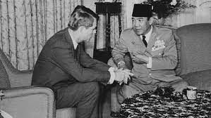
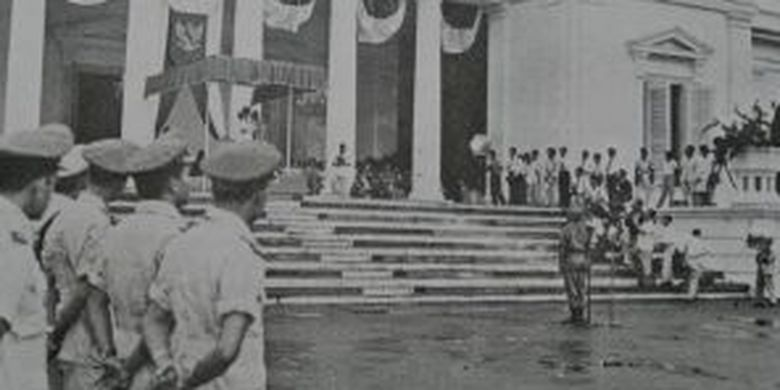

Demokrasi parlementer atau yang juga disebut demokrasi liberal adalah bentuk pemerintahan dimana kekuasaan dipisahkan antara kepala negara (presiden) dan kepala pemerintahan (parlemen). Maka, dalam demokrasi parlementer parlemen negaralah yang ditugaskan untuk mengerjakan tugas-tugas negara. Sistem demokrasi parlementer mulai digunakan di Indonesia dari tahun 1945 dan berakhir pada tahun 1959. Demokrasi Parlementer juga memiliki beberapa ciri-cirinya yang khas seperti;
Ciri-ciri Demokrasi Parlementer:
-Sistem pemerintahan secara langsung dipimpin oleh perdana menteri
-Presiden atau raja memiliki peran sebagai kepala negara
-Badan eksekutif yang direpresentasikan oleh presiden dipilih secara konsensus oleh badan legislatif (parlemen)
-Perdana menteri memiliki hak untuk mengangkat dan memberhentikan menteri di pemerintahan
-Badan legislatif (parlemen) dapat menurunkan badan eksekutif (presiden)
Semua hal memiliki kelebihan dan kekurangan nya sendiri. Jika dilihat secara akademis, sistem demokrasi parlementer memiliki beberapa kelebihan yang cukup strategis, seperti;
-Akselerasi dalam membuat kebijakan, karena adanya konsensus dan ketergantungan antara badan eksekutif dan legislatif
-Tidak tumpang tindih terkait konteks tanggung jawab, implementasi, dan membuat kebijakan
-Kontrol yang ideal dari badan legislatif kepada badan eksekutif
Di sisi lainnya, demokrasi parlementer juga memiliki beberapa kekurangan seperti;
-Dinamis dan tidak jelasnya waktu dilaksanakannya pemilihan umum
-Terlalu tergantungnya badan eksekutif kepada badan legislatif, sehingga berpotensi pemerintah dijatuhkan sewaktu-waktu
-Di sisi lain, badan eksekutif juga dapat mengontrol badan legislatif sewaktu-waktu ketika jumlah partai koalisi lebih banyak di parlemen
Latar belakang Demokrasi Parlementer:

Mulanya digunakan sistem demokrasi parlementer adalah saat jatuhnya kabinet presidensial pertama, pada 14 November 1945. Jatuhnya kabinet ini disebabkan oleh keluarnya Maklumat Wakil Presiden No. X/1945 pada 16 Oktober 1945, yang diikuti oleh Maklumat Pemerintah tertanggal 3 November 1945. Maklumat Pemerintah tersebut berisi seruan untuk mendirikan partai politik di Indonesia, sekaligus menandai titik mula menuju sistem politik yang lebih pluralistik dan demokratis. Maka dari situ, Badan Pekerja Komite Nasional Indonesia Pusat (BP KNIP) mengumumkan perubahan itu melalui laporan pertanggungjawaban Menteri Kepada Parlemen. Pada 14 November 1945, usulan BP KNIP telah disetujui oleh Presiden Soekarno. Dari sinilah sistem pemerintahan di Indonesia berubah. Dari sistem Presidensial menjadi sistem demokrasi parlementer.
Masa Demokrasi Parlementer

Karena kekuasaan diberikan kepada parlemen, ada beberapa kabinet yang melegitimasi pemerintahan di kurun waktu 9 tahun (1950-1959)
1. Kabinet Natsir
Kabinet ini dipimpin oleh Mohammad Natsir selaku perdana menteri. Natsir adalah tokoh politik dari partai Masyumi - partai Islam terbesar pada saat itu. Natsir menjabat mulai 6 September 1950 hingga 21 Maret 195.
2. Kabinet Sukiman-Suwirjo
merupakan koalisi politik dari dua partai, yakni partai Masyumi dan PNI. Di kabinet ini, Sukiman Wirjosandjojo bertindak sebagai kepala pemerintahan dan Suwiryo sebagai wakil kepala pemerintahan. Kabinet ini mengudara mulai 27 April 1951 hingga 3 April 1952.
3. Kabinet Wilopo
Kabinet Wilopo mendapatkan suara mayoritas dalam parlemen, maka dijadikannya perdana menteri. Kabinet Wilopo bertugas untuk menjalankan Pemilu anggota parlemen dan konstituante. Kabinet ini memimpin dari 3 April 1952 hingga 31 April 1953. Kabinet ini sangat cepat demisioner karena berbagai faktor, seperti kasus peristiwa 17 Oktober 1952, dan peristiwa Tanjung Morawa.
4. Kabinet Ali Sastromidjojo I
Kabinet ini memerintah sejak 31 Juli 1953 sampai 24 Juli 1955. Salah satu program kabinet yang cukup membekas adalah program persiapan pemilihan umum untuk dewan konstituante dan Dewan Perwakilan Rakyat (DPR).
5. Kabinet Burhanuddin Harahap
Kabinet ini menjalankan pemerintah sejak 12 Agustus 1955 hingga 24 Maret 1956. Ini merupakan kabinet hasil dari koalisi yang besar, karena terjalin dengan hampir seluruh partai yang ada parlemen.
6. Kabinet Ali sastromidjojo II
Untuk kedua kalinya Ali sastroamijoyo menjadi perdana menteri mulai 24 Maret 1956 hingga 14 Maret 1957. Kabinet Ali II ini adalah hasil dari koalisi politik dari tiga partai, yaitu PNI, Masyumi, dan juga NU.
7. Kabinet Djuanda
dipimpin oleh Djuanda Kartawidjaja yang memiliki 28 menteri. Kabinet terakhir dalam era demokrasi parlementer ini mulai memerintah sejak 9 April 1957 hingga 6 Juli 1959 sebelum diubahnya sistem pemerintahan menjadi demokrasi terpimpin oleh Soekarno.
Akhir Demokrasi Parlementer:
Pada masa pemerintahan kabinet Djuanda terjadilah banyak masalah. Beberapa pemberontakan, masuknya Permesta, dan juga percobaan pembunuhan terhadap Presiden Soekarno dalam Tragedi Cikini. Dengan singkat, masa demokrasi terutama saat kuasa dipegang oleh Kabinet Djuanda, membuat keadaan politik Indonesia tidak stabil. Hal tersebut mengakibatkan Presiden Soekarno mengeluarkan Dekrit Presiden pada 5 Juli 1959. Merujuk dekrit tersebut, Dewan Konstituante dibubarkan dan Indonesia kembali ke UUD 1945 alias meninggalkan UUDS 1950. Selain itu, dibentuk juga Majelis Permusyawaratan Rakyat Sementara (MPRS) dan Dewan Pertimbangan Agung Sementara (DPAS).
Pada akhirnya, sistem demokrasi parlementer/liberal yang telah membawa banyak kekacauan pada negara diganti dengan sistem demokrasi terpimpin, yang berlaku sejak 1959 sampai 1965.